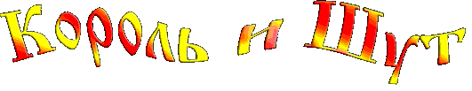
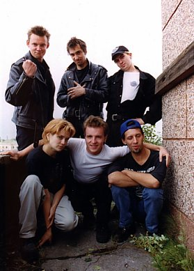
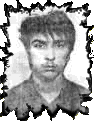
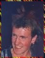
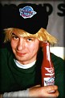
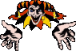

|
 |
Горшенёв "Горшок" Михаил | - вокал | |
| Князев "Князь" Андрей | - бэк-вокал | ||
| Балунов Александр | - бас гитара, бэк-вокал | ||
| Яков Цвиркунов | - гитара | ||
| Мария Нефёдова | - скрипка | ||
| Леонтьев "Ренегат" Александр | - гитара | ||
| Щиголев "Поручик" Александр | - барабаны |
| АНКЕТА: | |
 | |
| 1. Фамилия, имя, отчество: | Горшенёв Михаил Юрьевич |
Один из лидеров группы. Без него просто невозможно было представить группу "Король и Шут". Его яркая личность отвечает сама за себя: причёска, одежда, сценический макияж. Своим имиджем он достиг узнаваемости, уважения и авторитета в среде панк-рока. Отсутствие передних зубов лишь подчёркивает его индивидуальность. Остальные учасники группы ШУТят: "Он у нас мастер спорта по подтягиванию на зубах...когда они были. Сейчас жует сухари, десны тренирует, будет на них подтягиваться." Существует ещё одна байка по поводу зубов Миши. Правдива эта история или нет - решать вам. Когда Лёша и Миша Горшенёвы были детьми произошел такой случай. Они сидели дома, и тут раздался звонок в дверь. Это была мама. Ребята вскочили и побежали наперегонки, ведь каждому хотелось первым открыть мамину сумку и посмотреть что там вкусного! Лёша бежал впереди, а Миша сзади. И тут получилась небольшая заминочка... Миша врезался в своего впереди бегущего брата и ударился своими зубами об его голову. Эта байка была рассказана Алексеем Горшенёвым в одной из телепрограмм. | |
| 2. Сценическое имя: | "Горшок" |
| 3. Когда родился: | 1973г. |
| 4. Образование: | среднее(высшее) |
| 5. Настоящий цвет волос: | шатун |
| 6. Первая услышанная рок пластинка: | "Бременские музыканты" |
| 7. Любимый шум: | ручей |
| 8. Любимый вокалист: | Fish(Marillion) |
| 9. Любимая группа: | BAD RELIGION; DEAD KENNEDYS; MADNESS |
| 10. Любимыя книга: | много |
| 11. Любимый фильм: | много |
| 12. Хобби: | побольше веселиться, как можно больше читать, писать и т.д. |
| 13. Что думаешь о панках: | не плохо(ребята весёлые) |
| 14. Что думаешь о боге: | не думаю... Поднимается давление... |
| 15. Что думаешь о Короле и Шуте: | ...из ушей пошла кровь! |
| АНКЕТА: | ||
 | ||
| 1. Фамилия, имя, отчество: | Цвиркунов Яков Вадимович | |
|
| ||
| 2. Сценическое имя: | Сц. Имя - нет, ну и ладно, у меня своё неплохое. | |
| 3. Когда родился: | 27.07.75 | |
| 4. Образование: | высшее | |
| 5. Настоящий цвет волос: | русый | |
| 6. Первая услышанная рок пластинка: | Кино "Ночь" | |
| 7. Любимый шум: | Море | |
| 8. Любимый вокалист: | Боно (U2) | |
| 9. Любимая группа: | Король и Шут | |
| 10. Любимая книга: | Братья Стругацкие "Понедельник начинается в субботу" | |
| 11. Любимый фильм: | "Злоба". А любимый сериал - АЛЬФ. Так что если хотите познакомиться с Яшей привозите кассеты с записями сериала. | |
| 12. Хобби: | Компьютер и горные лыжи | |
| 13. Что думаешь о панках: | Ничего необычного | |
| 14. Что думаешь о боге: | Сам ещё толком не знаю, но задумываюсь | |
| 15. Что думаешь о Короле и Шуте: | No comments | |
| АНКЕТА: | |
 | |
| 1. Фамилия, имя, отчество: | АБВ (Балунов Александр Валентинович) |
| |
| 2. Сценическое имя: | Эй! |
| 3. Когда родился: | не помню (19.03.1973) |
| 4. Образование: | Да, высшее |
| 5. Настоящий цвет волос: | не помню |
| 6. Первая услышанная рок пластинка: | не помню |
| 7. Любимый шум: | любимый шум |
| 8. Любимый вокалист: | М. Борзыкин |
| 9. Любимая группа: | Этикетка |
| 10. Любимая книга: | Жизнь |
| 11. Любимый фильм: | Жизнь |
| 12. Хобби: | то же |
| 13. Что думаешь о панках: | не думаю |
| 14. Что думаешь о боге: | это я |
| 15. Что думаешь о Короле и Шуте: | то же |
| АНКЕТА: | |
| 1. Фамилия, имя, отчество: | Нефёдова Мария Владимировна |
| |
| 2. Сценическое имя: | Меняется в зависимости от цвета волос. Последний вариант - "Скрипичный Красноголовик", на сегодняшний день уже не актуально. |
| 3. Когда родилась: | 01.09.1979 |
| 4. Образование: | Неоконченное высшее |
| 5. Настоящий цвет волос: | Русый |
| 6. Первая услышанная рок пластинка: | Бременские Музыканты |
| 7. Любимый шум: | Я предпочитаю тишину |
| 8. Любимый вокалист: | Роберт Плант, но, в общем, мне больше по душе бас-гитаристы. |
| 9. Любимая группа: | Red Hot Chili Peppers |
| 10. Любимая книга: | Гёссе "Нарцисс и Гольдмунд" - последнее яркое впечатление. |
| 11. Любимый фильм: | Не люблю смотреть телевизор |
| 12. Хобби: | Коллекционирую закаты солнца |
| 13. Какие наркотики употребляешь: | Чупа-Чупс |
| 14. Что думаешь о панках: | Панк, на мой взгляд, это образ жизни. Мне он несимпатичен. |
| 15. Что думаешь о боге: | О, я очень уважительно отношусь к тому засранцу, который придумал всю эту забавную игру. |
| 16. Что думаешь о Короле и Шуте: | Я не думаю, я играю в этой группе. |
| ВЫСЫЛАЙТЕ вопросы, возможно их включат в анкеты. |
| Сотворил © 2000 Ёпрст Лучше под IE |
